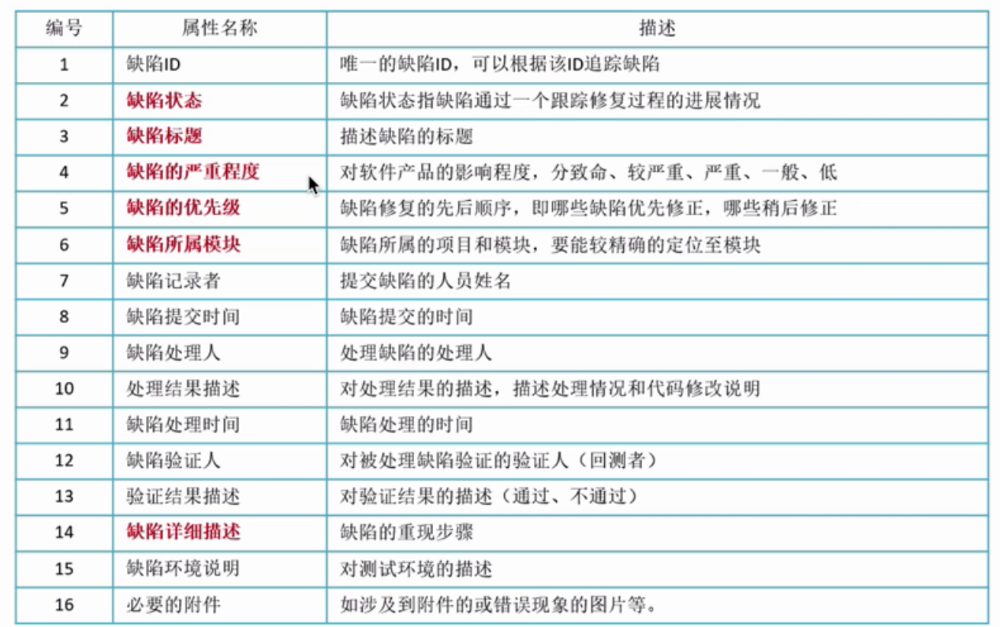
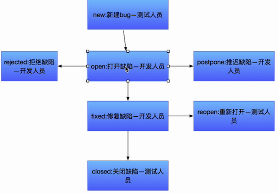
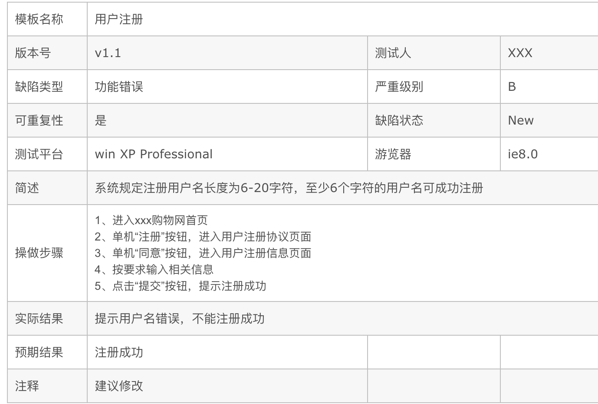

缺陷
1. 软件缺陷的概述
1.1 软件缺陷定义
软件缺陷, 通常又被叫做bug或者defect, 即为软件或程序中存在的某种破坏正常运行能力的问题、错误,其存在会导致软件产品在某种程度上不能满足用户的需求.
软件缺陷是指存在于软件(程序、数据、文档中的)那些不符合用户需求的问题.
1.2 软件缺陷的表现形式
主要表现为三种形式:“缺陷”、“故障”、 “失效”
缺陷: 存在于软件中的偏差,可被激活，以静态的形式存在于软件内部，相当于bug;
故障: 软件运行中出现的状态，可引起意外情况，若不加处理，可产生失效，是一个动态行为；
失效: 软件运行时产生的外部异常行为结果，表现与用户需求不一致，功能能力终止，用户无法完成所需要的应用。
缺陷不一定就会导致故障,只要缺陷没被触发; 同样,故障不一定就会导致失效,只要故障处理的得当.
2. 产生软件缺陷的原因
产生软件缺陷的原因很复杂,原因各种各样,:
- 需求有缺陷
- 系统架构设计阶段有缺陷
- 程序设计阶段有缺陷
- 程序研发阶段有缺陷
- 测试阶段有缺陷
- 硬件有缺陷
3.缺陷的信息
为了便于缺陷的定位、跟踪和修改,要对说发现的缺陷,按照缺陷的严重程度、优先级、发现阶段、修复阶段、缺陷的性质、所属功能模块、西庸环境等方面进行分类和统计,

3.1 状态
- New:缺陷的初始状态；
- Open：开发人员开始修改缺陷；
- Fixed：开发人员修改缺陷完毕；
- Closed：回归测试通过,关闭缺陷；
- Reopen：回归测试失败,再次打开；
- Postpone：推迟修改；
- Rejected：开发人员认为不是程序问题，不用修改；
- Duplicate：与已提交的Defect重复；
- Abandon：被Reject和Duplicate的Defect，测试人员确认后的确不是问题，将Defect置为此状态。
3.2 缺陷处理流程

当我们提交的Defect与别人提交的相同时，缺陷就被置为Duplicate状态。
如果说开发人员觉得测试人员提交的不是问题，不用修改，可以将这个BUG置为Reject状态。
被Reject和Duplicate的Defect，我们最终要把它置为Abandon状态
3.3 缺陷的严重程度和优先级
缺陷的严重程度就是：站在用户的交付，bug出现之后对软件质量的破坏程度，也就是说这个软件缺陷的存在将对这个软件的功能和性能产生怎么样的影响。
1. 严重程度
一般来说，软件的严重程度分为五个等级：
(1) Fatal 致命的缺陷
造成系统或应用程序崩溃、死机、系统挂起，或造成数据丢失，主要功能完全丧失，导致本模块以及相关模块异常等问题
(2) Critical 严重错误的软件缺陷
系统的主要功能部分丧失、数据不能保存，系统的次要功能完全丧失。问题局限在本模块，导致模块功能失效或异常退出。如致命的错误声明，程序接口错误，数据库的表、业务规则、缺省值未加完整性等约束条件。
(3) Major 一般的软件缺陷
次要功能没有完全实现但不影响使用。如：提示信息不太准确，或用户界面差，操作时间长，模块功能部分失效等，
(4)Minor 较小的软件缺陷
较小错误的软件缺陷，使操作者不方便或遇到麻烦，但它不影响功能性的操作和执行，如错别字、界面不规范等
(5) Enhancemental 建议问题
由问题提出人对测试对象的改进意见或测试人员提出的建议、质疑。
2. 缺陷的优先级
由于缺陷的等级不一样,导致处理缺陷的先后顺序不一样,一般分为下面几种:
(1) P1 立即解决
缺陷导致系统几乎不能完全运行、使用，或严重妨碍测试的执行，需立即修正、尽快修正；
(2) P2 高级优先
缺陷严重，影响测试，需要优先考虑修正，如不超过24小时修正；
(3)P3 正常级别
缺陷需要修改,只要正常排队修复就可以
(4)P4 低优先级
缺陷可以在开发人员有时间的时间修复,若没时间可以不修正
4. 缺陷报告

缺陷报告单是任何缺陷修改的一个起始，也就是我们测试人员在进行测试执行的时候，发现了一个缺陷，发现缺陷后，我们不要口头和开发人员交流，因为口头的交流不仅没有任何的约束力，而且有可能表达不清楚，所以我们要把缺陷落实在纸面上，也就是要测试人员填写缺陷报告单。
作用:
测试执行过程中，发现缺陷失效后（不一定是失效，也许是故障，一般来说这个缺陷在测试阶段被发现往往表现为产品失效），提出书面的报告，提供给开发人员作为定位缺陷的依据，也作为日后缺陷度量的数据依据，开发人员接到缺陷报告单后，他会根据缺陷报告单上描述的缺陷外在表现来重现这个问题，然后找出这个问题，也就是缺陷产生的根源。
缺陷报告还可以作为我们日后缺陷度量的数据依据，度量是对整个产品进行考核，比如说，我们的软件在什么时候可以发布，什么时候可以交付给客户等等问题，这个时候我们往往从缺陷度量的数据来看，比如我们子啊最后一轮进行测试的过程中，每千行代码只有0.1个缺陷，说明我们产品的质量已经非常高了，而且遗留的缺陷也就非常少了，这个时候就可以发布产品了，所以这个缺陷的统计数据时非常重要的，它可以作为缺陷度量的依据。
5. 缺陷管理目的
从上面我们学习软件缺陷相关知识,我们的主要目的是进行缺陷的管理来实现“对各个阶段测试发现的缺陷进行跟踪管理，以保证各级缺陷的修复率达到标准”, 主要实现以下目标：
- 保证信息的一致性；
- 保证缺陷得到有效的跟踪，缩短沟通时间，解决问题更高效；
- 收集缺陷数据并进行数据分析，作为缺陷度量的依据。